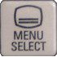
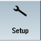
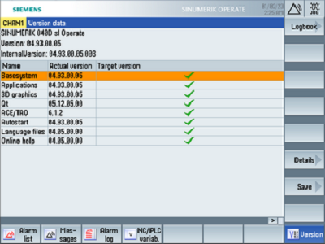

Create MyHMI /3GL can be used to create HMI extensions for the SINUMERIK 840D sl and SINUMERIK ONE or stand-alone user interfaces for SINUMERIK 840D sl, SINUMERIK ONE, and SINUMERIK MC.
SINUMERIK Create MyHMI /3GL allows high-level language applications to be developed in the C++ programming language in conjunction with Qt for SINUMERIK Operate on SINUMERIK PCU 50.5, SIMATIC IPC427E or IPC477E, and on SINUMERIK NCU 7x0.
Here are some small code samples used to monitor variables (using a dinamic graph) or to log alarms...
The HMI (Human Machine Interface) on the Sinumerik system may be based on the native Linux system, running from the CF card of the NCU unit, or on a Windows system installed on a distinct PC unit, connected to the NC via network.
In order to install a new app is neccessary to identify the operating system (Linux or Windows), the computer running the HMI interface (NCU or an external computer such as PCU [PC Unit] or IPC [Industrial PC]) and the correct install path of the HMI software.
The type of system may be identified on Operating Area 'Setup', 'System data' menu...


> > >
...by checking where the system data are located.
If a 'System CF card' is present, SINUMERIK Operate runs under Linux from NCU unit.
If a 'System HDD' is present, SINUMERIK Operate runs under Windows from a PCU or IPC unit.
For a system running on Linux, from the CF Card of the NCU Unit, Sinumerik Operate path is: /card/oem/sinumerik/hmi
For a system running on Windows, from the HDD of the PCU or IPC Unit, Sinumerik Operate path should be identified from Windows settings.
... for a system running Windows XP the path may be: F:/hmisl/oem/sinumerik/hmi
... while for a system running Windows7 or Windows10 the path may be: C:/Program Files (x86)/Siemens/MotionControl/oem/sinumerik/hmi
Identify version
The version of the MyHMI/3GL used in application should match the Sinumerik Operate version.
The version of the HMI system (Sinumerik Operate) may be identified on Operating Area 'Diagnosis', 'Version' menu...
> > >

Download App
The app version must match the version of the target system, identified as above...
Test MyHMI/3GL App on a Sinumerik Simulator...[optional]
It may be a good ideea to test the app before installing on a real Sinumerik system.
'Create MyHMI/3GL' Apps (compiled for Windows) may be tested on Sinutrain, a Sinumerik simulator.
Starting with version 4.5, Sinutrain has also a Basic version (free use without license), available for download.


 > > >
> > >